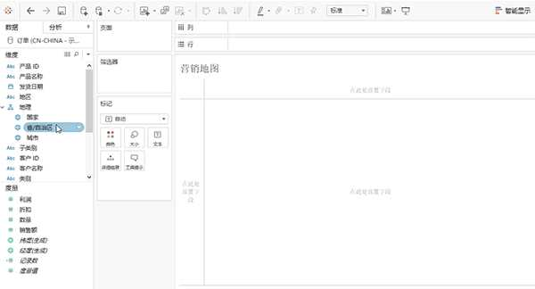
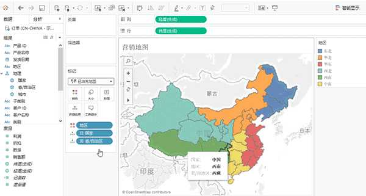
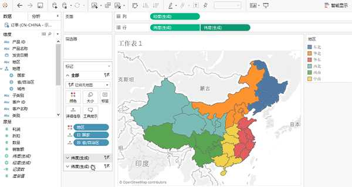
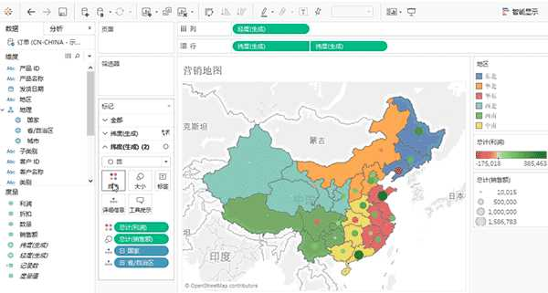

Tableau技巧：巧妙制作混合地图
一、创建填充地图
先创建了一个填充地图，“地区”以颜色分省市填充地图如下：设置好地理角色后，双击国家下钻到省份，将地区拖到颜色中，在标记卡中修改图形类型为“填充地图”

为了使工作表中多一个维度，她把“度量窗口”中的“纬度（生成）”再次拖放到行功能区中，此时同时展示了两个地图。
二、形成两个地图并合并
为了使工作表中多一个维度，她把“度量窗口”中的“纬度（生成）”再次拖放到行功能区中，此时同时展示了两个地图。选择双轴，两个地图重叠为一个。

三、将其中一个地图改为符号地图
可以看到在“标记”卡中生成了两个切换条，为了“维度（生成）”和“维度（生成）（2）”，代表了地图的两个图层。于是她选择“维度（生成）（2）”，修改图形类型为圆，并拖放“利润”到标记卡中的“颜色”中，“销售额”到“大小”，就得到了下面这样的图。

再进行一些小的设置，如加边界、调整大小等，混合地图就完成了。

简单操作就能实现地图三维信息展示的小技巧，你get到了吗？